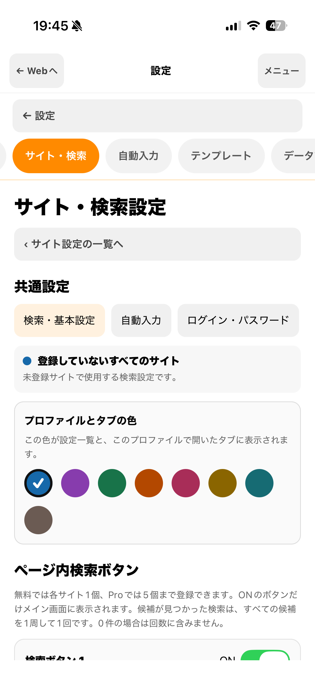

SITE SEARCH SETTINGS
サイトごとの検索ボタンを保存して、次回も使う。
検索する文字やボタンの表示名をサイトごとに登録できます。ここでいう「サイト設定」は検索機能の設定です。ログイン状態を分ける「ブラウザプロファイル」とは別の機能です。
検索したい文字を、サイト設定に登録
サイト名、対象ドメイン、開始URL、検索ボタンをまとめて登録します。ページ内検索で使うボタンの表示名や検索文字を設定しておけば、次回も同じ設定を利用できます。

設定を別の端末へ移すときは、JSONファイルに書き出して読み込みます。自動同期ではなく、共有する内容を確認して手動で移します。
共有ファイルに含まれるのはサイト名・色・対象ドメイン・開始URL・検索ボタンの設定です。ログイン情報、自動入力の登録値、テンプレート、閲覧履歴は含まれません。
1. アプリから保存
- 「設定 → サイト・検索設定」で共有したいサイトを選択します。
- 「書き出す」を押し、共有内容の注意を確認します。
- 端末の共有画面で「ファイルに保存」などを選び、JSONファイルを保存します。
書き出しには、サイト名、表示色、対象ドメイン、開始URL（クエリとフラグメントを除く）、検索ボタンの表示名・検索文字・有効状態が含まれます。自動入力の登録値、テンプレート、ログイン情報、閲覧履歴、購入情報は含みません。ただし、サイト名、URLのパス、検索文字に個人情報や秘密の文字が含まれていないか、書き出し前に確認してください。
2. 自分のGitHubで共有
- ご自身のGitHubの公開リポジトリを開きます。
- 「Add file → Upload files」で保存したJSONを選び、変更を保存します。
- 公開したファイルのページURLをコピーして共有します。
GitHubアカウントへのログイン・ファイル投稿はGitHubで行います。アプリから直接投稿はしません。公開した情報は誰でも閲覧できるため、公開先の管理と削除はご自身で行ってください。
3. JSONページから取り込む
- 共有されたJSONのURLをコピーし、LikeAssistのブラウザで開きます。
- ファイルを確認できると、アドレス欄付近に「取り込む」ボタンが表示されます。ボタンを押し、サイト名・対象ドメイン・開始URL・検索ボタンを確認します。
- 取り込み先のブラウザプロファイルを選び、「確認して保存」を押します。登録済みのプロファイルを選べます。新しいプロファイルを作成できるのはiOS 17以降です。
ブラウザプロファイルは、LikeAssistの中でログイン状態を分けて使うための設定です。JSONに入っているのは検索設定だけで、ログイン情報は含まれません。
登録済みのブラウザプロファイルを選ぶ場合：そのプロファイルのポケパラ用検索設定を更新します。ログイン状態や保存済みのID・パスワード、自動入力設定はそのまま残ります。同じドメインの設定が複数ある場合は、誤って上書きしないよう自動では取り込みません。
新しいブラウザプロファイルを作成する場合：ログイン状態は引き継がれません。新しいプロファイルでポケパラにもう一度ログインしてください。新規作成はiOS 17以降で利用できます。
取り込みボタンは、対応するGitHubのファイルページ、raw.githubusercontent.com、GitHub PagesのJSON URLで、ファイルを確認できた場合に表示されます。ファイルは64KB以下・形式バージョン1に対応しています。対応形式でない場合や取得できない場合は保存できません。取り込み後も、Webサイトを開いたり、ボタンを押したり、ログインしたりはしません。
設定画面から読み込む方法
JSONページをLikeAssist内で開けない場合は、「設定 → サイト・検索設定 → サイト設定を共有・読み込み」から、「保存したJSONファイルを読み込む」またはURLを貼り付けて「入力したURLから読み込む」を選べます。URL欄の内容だけを読み込み、ブラウザで開いている別のURLは使いません。読み込み後は内容と取り込み先を確認して保存してください。
練習用サイト設定
JSONページから試す場合は、次のURLをコピーしてLikeAssistのブラウザで開いてください。
https://ats-spec.github.io/likeassist-support/guide-profile.json
無料・Proの上限
無料は3プロファイル・各1検索ボタン、Proは20プロファイル・各5検索ボタンです。読み込み先の上限も同じです。上限に達している場合は読み込めず、既存のプロファイル数や共有ファイル内の検索ボタン数を調整するか、Proをご検討ください。